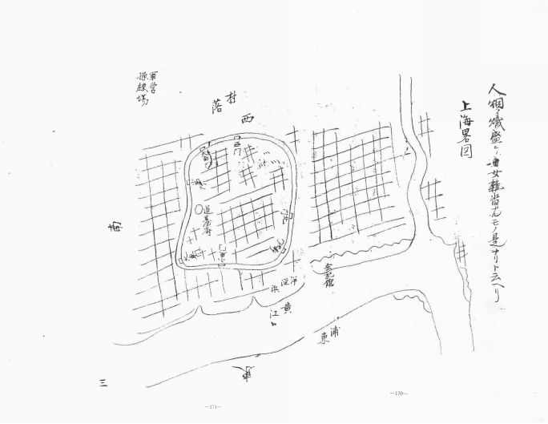

| 1862年高杉晋作が見た上海 | |
| 阿久津 洋夫 | |
| AKUTSU HIROO (2016) | |
千歳丸より上海を見たる圖
松田屋半吉「唐國渡海日記」から
「1862年高杉晋作が見た上海」
阿久津洋夫
はじめに
高杉晋作は、安政の大獄で師の吉田松陰が処刑され、幕府内でごたごたの起きる中、上海行きを強く望んだ。幕府官吏は上海に着いてすぐ 宏記館 （千歳丸随員の宿）の狭さや待遇の悪さに不満を述べた。高杉はその様子を見て「何のために上海に来ているのか」と激怒している。
上海ではイギリス人が 上海海関 （新関）から莫大な利益をあげていた。イギリス人は資金を集めて ウィルズ橋（外白渡橋） を造り、橋を渡る中国人や中国船から通行料をとって大金を得た。このようなイギリス人のやり方を知ると、千歳丸随員の反イギリス（攘夷）感情が高まった。
高杉晋作は、幕府が欧米諸国に戦争で負けると、上海（清）と同じ状態になると思った。高杉は上海の実情を知るために、中国人に頻繁に会い親交を深めた。また、 聖三一教会（麦家圏） に訪ね、イギリス人牧師とイギリス人が清朝と上海政府をどうみているか聞いただろう。
高杉が一番知りたかったのはイギリス軍の兵力と清軍の実力だった。高杉は 老西門 を訪ねて、清国練兵を見学したとき「支那の兵術は、西洋の銃隊の強堅さにはとても及ばない」といっている。李鴻章の淮軍は太平天国軍から上海を守るために 大南門 外に駐留していたが、人数に劣る常勝軍（欧米人将校と中国人傭兵からなる部隊）の方が太平天国軍との戦いで戦果を上げていた。欧米流の強固な兵制を知ったとき、高杉は長州に帰ったら常勝軍のような軍団（奇兵隊）をつくろうと考えたに違いない。
高杉 は 2 0 歳で昌平黌（孔子を学ぶ幕府直営学問所）に入学し、上海に来 る2 年前、長州藩藩校明倫館の舎長を命ぜられた。上海に来て 文廟（ 孔子廟 ） にある明倫堂を見たときには感慨深かっただろう。しかし、文廟はイギリス兵の宿営するところとなり、中国人は文廟（明倫堂など）に立ち入ることさえ禁じられていた。孔子がいわば学問の神様であった千歳丸随員にとって、文廟がイギリス兵に占領された状態は受け容れがたかった。
上海の街でイギリス人が通りかかると、清朝高官であっても萎縮して道を譲る姿を見た。高杉は上海に暮らす中国人の現状に同情し、長州藩（日本）の未来を憂えた。高杉は、同じ東洋人として中国人に共感するとともに、長州藩をイギリスに支配される上海のようにしてはいけないと思った。
上海から帰国してすぐ （ 186 2年 1 2 月）高杉晋作、井上馨、伊藤博文らは新築中のイギリス公使館を焼き討ちした。上海帰国翌年、高杉晋作は奇兵隊を創設し、西洋式軍事訓練をはじめた 。 186 5 年下関功山寺で決起し、長州藩を討幕へと向かわせた。高杉晋作は上海で考えたことを実行し、実現させたとはいえないだろうか。
* 太字 は、高杉晋作が上海で訪れた場所。
＜遊清五録＞
1862年高杉は幕府の貿易調査船「千歳丸」(注１)に乗って上海を訪れた。このとき高杉晋作が書き残した日記が「遊清五録」（注２）である。
千歳丸には、高杉晋作や中牟田倉之助、五代友厚（才助）などがいた。随員の日記や記録は高杉晋作の「遊清五録」ばかりではない。中牟田倉之助「上海行日記」、納富介次郎「上海雑記」、日比野輝寛「贅肬録」･「没鼻筆語」（注３）、峰潔「船中日録」・「清国上海見聞録」、松田屋伴吉「唐国渡海日記」、名倉信敦「海外日録」・「支那聞見録」などがある。
1862年の上海の様子を知るのに日比野輝寛「贅肬録」（注２）は資料として秀逸である。わたしがこの稿で参考にしたのは主に高杉の「遊清五録」と日比野（掬治）の「贅肬録」である。
注１：「千歳丸」の前身はイギリス船"Armistice"である。長崎で幕府がイギリス船"Armistice"船長Richardoson に34,000ドルを支払い購入した。千載丸の名目船長は沼間平六郎であったが、船長は売主のRichardosonである。
Richardosonは1860年から1862年船売却まで上海と長崎を6回以上往復している。"North China Herald"Dec.８．１８６０〜Aug.９．１８６２ 「幕府第一次上海派遣官船千載丸の資料（下）」沖田一
注２：高杉晋作の「革命日記」朝日新書
注３：納富介次郎、日比野輝寛「文久二年上海日記」東方學術協會 昭和二十一年刊）
＜高杉晋作が見た上海＞
1, 黄浦江（外灘）
高杉晋作は、千歳丸から上海（外灘）を眺め、次のように書いた。「 早朝、川蒸気が来て本船を曳き、 左折して江を遡る。両岸の民家の風景は、わが国と変わることはない。右岸にはメリケンの商館あり。かつて長髪族（1851年大天国軍）と支那人がこの地で戦ったのだという。
...ここは支那第一のにぎやかな港である。ヨーロッパ諸国の商船、軍艦数千艘（「蛮船百余、軍艦14，5艘、唐船幾千」『上海雑記』納富）が碇泊している。帆柱は森林として津口を埋めようとしている。陸上は諸国の商館の白壁が延々と続き、城郭のようだ。」（『遊清五録』航海日録から）
＜黄浦江の水＞
千歳丸随員は、上海で黄浦江の水を飲んだ。ひどく汚れた黄浦江の水に石膏あるいは礬石（明礬 ）を入れ、汚れを沈殿させて飲んだ。しかし、この水で多くの随員が腹を下し、碩太郎、傳次郎、紋蔵の三人は終に病気で帰らぬ人となった（注４）。納富介次郎も腹を下し、危うく死にかけた（注６）。
1862年には太平天国軍と清軍との戦いから逃れ、上海に大量の難民が流入していたうえに、コレラが流行して多数の病死者が出ていた。病死者は埋葬しきれず、道に棺桶を積み上げ放置された。そこから耐えられないほどの異臭がした（注５）という。また、埋葬しきれない場合には、黄浦江に投棄した。
高杉晋作も「水杯」を交わしてこの旅に加わった。幕末、上海往きはまさしく命懸けであった。
注４：納富介次郎「上海雑記」P.7
注５： 〃 P.8
注６： 〃 P.85
２， 宏記館（宏記洋行）

「上海畧図」 宏記館 、 操練場 、 道台府 の記述あり
名倉信敦（ 「支那聞見録」より）
宏記館は1862年千歳丸一行が投宿した旅館である。宏記館は現存しない。わたしの得た上海古地図（注７）にも宏記館の記載はない。幕府貿易調査団に従った人々の日記によると、宏記館は和蘭（オランダ）領事館に近い（注８）。1862年当時の和蘭領事館(注９)の位置が分かれば宏記館の位置も分かる。しかし、1862年当時の和蘭領事館の所在を在上海オランダ領事館に尋ねたが分からないという。
峯潔は宏記館が「老北門より東の方三町永安街という処にあり」（「清国上海見聞録」）というが、「永安里街」は「上海縣廂租界全図」（光緒十年）を見ると河や運河に面していない。名倉予何人（あなと）は「宏記館の北五、六町税関あり」（「支那見聞録」）という。しかし、名倉自身で書いた「上海畧図」（前頁）を見ると宏記館の位置と説明が一致しない。
注７：「上海法国租界分図」、「新絵上海城」、「上海縣廂租界全図」（光緒十年）「Map of the Old City of Shanghai」(made circa 1860)「上海縣城図」（1553年）、「清国上海全図」（品川忠通、明治６年。原図は1866年のもの）など
注８：高杉晋作「遊清五録」、納富介次郎「上海雑記」、中牟田倉之助「上海行日記」など
注９：中牟田倉之助「上海行日記」に「千歳丸が和蘭領事館に碇を投じた。」とある。
＜宏記館の所在＞
それでは、宏記館は現在のどのあたりにあったのだろう。
日比野輝寛は「贅肬録」に宏記館の所在を次のように書いている。宏記館は 「黄浦江に面しており、随員は宏記館裏から杉板に乗って千歳丸まで行けた」 （注１０）。
「宏記館前の道を左折して60〜70ｍ（百步）行くと新関（江海関）があり」、また別の日に「宏記館を出て左折すると、その先に潮州会館、城郭がある」（注１１）という。また千歳丸が上海を離れる時、「宏記館から見送りの人が手をふる」姿が見えたとある。宏記館は千歳丸停泊地点と目と鼻の先にあったことが分かる。（注１２）
以上、日比野の記録をもとにすれば、宏記館は新関（上海海関）（注１３）の北60から70ｍ（百步）に位置し、現在の交通銀行や中国外匯交易中心と道路を挟んで反対側（東側）にあったと考えられる。
注１０：「贅肬録」に「杉板ニ乗リ宏記館ニ至リ旅次トス」P.63
注１１：「贅肬録」「午下旅館ヲ出、左折百歩小橋ヲ渡リ新関ニ至ル」P.98「贅肬録」に「未明ヨリ城郭ヲ一周スルヲ約シ、旅館ヲ出テ左折ス。江岸ヲスギ潮州会館ノ前ヲスギ小橋ヲ渡ル」P.84
注１２：「顧看スレバ、宏記館楼上ニ数十人手ヲアゲテ我船ヲノゾム。コレ去日別レヲ惜シミシ者ナルベシ」P.113
注１３：1862年当時の新関（江海関）は現在と同じ位置（中山東一路）にあった。
３， 江海関・上海海関 (千歳丸随員は「新関」と呼んだ)
1862年当時の写真「江海関」"Wikipedia"
1854年小刀会蜂起の後、イギリスが清朝に替わって関税業務を行うようになり、以後莫大な利益をイギリスにもたらした。1857年上海政府によって初代江海関が現在の場所、中山東一路に置かれた。現在の建物は、1927年に竣工し、上海海関3代目である。
「この新関は、上海港の運上所(税関)でとても広い。・・・・清国政府から高官（道台＝呉煦）が一人とイギリス人司長（フィッツ・ロイ）で管理している。イギリス人司長の給与は年に洋銀八千（我が国の四千両余り（注１３））だ。」「上海港は清国第一の港なので、１日の船運上は洋銀六百以上になる。新関の利益は莫大である。清国は莫大な利益を洋夷（イギリス）に為す術なく奪われている。悲嘆にくれるばかりである。」（注１４）
注１３：安政小判（1859年下半期）3両＝金約20ｇ 4,000両＝金26.6kg （約１億2千500万円）
注１４：日比野輝寛「贅肬録」P.108
４， 新大橋（ウィルズ橋） ＝ 外白渡橋（中国人は外擺渡橋と呼んだ）
1862年当時のウィルズ橋＝外白渡橋 "Wikipedia"
高杉が上海を訪問したとき、ウィルズ橋を渡るのには通行料が必要だった。外国人は無料（中国人には無料に見えた。外国人は「つけ払い」＝年払いであったという。）で通行料を中国人だけから取るので、評判が悪かった。呉淞江を大型船が通行できるように、北側は「跳ね橋」構造になっていた。中国船が往来するとき、銀銭一枚を取って「跳ね橋」を開いた(注１５)。ウィルズはこの橋の経営で、大金を得た。現在の外白渡橋は、1907年にできた鉄骨橋。
官吏と イギリス領事館 、 アメリカ領事館 、 ロシア領事館 に行く。「イギリス領事館から五，六間ほど離れ、 新大橋 と名付けられた橋がある。...支那人は通行するたびに、イギリス人に一銭を貢がなければならないという。」（高杉晋作「遊清五録」）
注１５：「新大橋ト云エルハ、英人ノ築クトコロニシテ、橋ノ中ホド両方ニ開ク様ニシタリ。コレ唐船往来ノトキ、英人銀銭一枚ヲ取リソノ中ヲ開クト云フ」納富介次郎「上海雑記」
５， 聖三一堂 "Holy Trinity Church"九江路201号
高杉が訪れた1862年には上海にキリスト教会が３つあった（1847年聖三一堂、1851年徐家匯天主堂、1853年董家渡天主堂）。高杉と五代は 5月23日に、高杉と中牟田は5月27日に 「 イギリス人宣教師ミュルヘット（注１６）を訪ねた」（ 「遊清五録」） 高杉がミュルヘットを二度訪ねたのはこの教会だろう。
ミュルヘットは麦家圏（注１７）にあった墨海書館（出版社）から1853年「地理全志」を出版している。「地理全志」は日本でも出版され人気があった。また、墨海書館で王韜など優秀な中国文化人が、聖書などの中国訳に大きく貢献していた。
注１６： William Muirhead was a Protestant Christian missionary who served with the London Missionary Society during the late Qing Dynasty in China . "Wikipedia"
注１７：麦家圏はメデュハースト（麦都思）が中心となり造った 上海におけるプロテスタント全会派の一大活動拠点であった。 仁済医館、 墨海書館 、教会からなる。ミュルヘットは墨海書館設立メンバーであった。 「近代中国におけるプロテスタント宣教師の文化活動」劉建輝
聖三一堂は「 英国国教会の礼拝堂。上海初のプロテスタント教会として1847年竣工。1869年再建。イギリスゴシック様式。赤煉瓦の壁から「紅礼拝堂」とも呼ばれる。日本占領下では敵性外国人収容所として使われた。」（増補改訂版「上海歴史ガイドマップ」木之内誠 P78より）
６， 大境閣、古城墻 （旧上海城壁）
上海城壁は「度重なる倭寇の襲撃に備えるため、明の嘉靖32年（1553年）に築かれた。大境閣は望楼の一つで、1815年の改築を経て三層の楼閣となった。正殿には関帝をまつる。」 （増補改訂版「上海歴史ガイドマップ」木之内誠 P103より）
「1840年アヘン戦争が始まり、イギリス軍は広州から沿岸を北上し1841年6月に、イギリス艦隊十余隻が上海に向けて攻撃を開始した。清朝軍は呉淞砲台で応戦したが敗れ、道台らは城内から逃亡する。入城したイギリス軍は三日三晩略奪・暴行を行った。
上海にイギリス初代領事バルフォアが赴任したのは1843年11月のことだった。ジャーディン・マセソン商会、デント商会などの商人が続々とやってきて、中国人の住む城内に間借りした。商人たちの居留地として租界が設置されたのは1854年だった。」（中公新書「上海」榎本康子）
民国当初城壁が撤去された際に、大境閣に監督事務所が置かれたため、旧城壁は大境閣に続く50ｍほどを残した。 城壁は壊され、堀に城壁のレンガを埋めて、その跡は現在の中華路と人民路になっている。大境閣は1966年から1976年文革の嵐の中、破壊に晒された。1992年上海県設置（1292年）700年記念行事として大改修工事が行われた。
以下、上海城壁の古い絵、地図、写真。
{kind=link}
A 17th-century painting showing the city wall of the Old City of Shanghai and the river port outside the wall.
明清时期的上海城墙
７， 老西門

イギリス兵、清国兵 納富介次郎 「上海雑記」
高杉晋作は 「 5月20日 昼食後、 上海城西門 の兵衛に陳汝欽を訪ねる。陳汝欽は気概があり僕とは気心がよく合う。」6月14日中牟田と西門に行き、清国練兵を見学して「支那の兵術は、西洋の銃隊の強堅さにはとても及ばないと知るべき」といっている。
高杉晋作は「6月20日早朝、 西門 に行く。」「陳汝欽と談じ、大変おもしろかった。」っといい、陳汝欽に詩「留別ス」を贈った。
「敵ニ臨ミテ練磨ス武ト文トヲ 他年マサニ勲功ヲ健ツルコトアルベシ 孤生千里帰郷ノ夜 患難ニ遇ウ毎ニ又君ヲ思ワン」
（『遊清五録』上海淹留 日記より）
日比野が清国兵に「種子島のような旧式銃を使っているが、どうしてイギリス人が使う新型銃を使わないのか」と聞くと清国兵は「我が清国が大事にしているのは義勇で、兵の強さは機械ではない。ただ、義勇を以って戦うだけだ。」といった。（『贅肬録』P.１１２）
高杉をはじめとして、維新を成し遂げた志士たちは「すぐれた西欧の技術（鉄砲、大砲、蒸気船）は利用しても、日本人の精神と独自性は失わない」と考えたところに清国人（中国人）との違いがあった。
同治元年3月（１８６２年 ） 李鴻章の淮軍は太平天国軍から上海を守るために 大南門 外に駐留していたが、人数に劣る常勝軍（欧米人将校と中国人傭兵からなる部隊）の方が太平天国軍との戦いで戦果を上げていた。欧米流の強固な兵制を知ったとき、高杉は長州に帰ったら常勝軍のような軍団（奇兵隊）をつくろうと考えたに違いない。
高杉晋作は常勝軍の活躍を見て、近代兵器と西洋式練兵の必要を感じた。5月21日「この日終日閑座してよくよく上海の形勢を考える。支那人はことごとく外国人にこき使われ、イギリス、フランス人が街を歩けば、清人はみな傍らにさけて道を譲る。我が国も油断してはならない。支那だけのことではないのだ。」
（ 『遊清五録』上海淹留 日記から）
西門は 「旧県城の儀鳳門の通称。民国初年（1912年清朝が滅び、中華民国臨時政府が成立）に城壁撤去とともに取り壊されるが、その名は付近一帯の通称として残る。」 （増補改訂版「上海歴史ガイドマップ」木之内誠 P103より）
８， 文廟
納富介次郎 「上海雑記」
1862年の文廟図「贅肬録」から
「賊の変（小刀会蜂起）以来、ここにイギリス人が居続けるようになり、陣営に変わってしまった。廟堂の中では兵卒が鉄砲を枕にして寝ている。これを見ると、実に嘆かわしい思いがする。」（『遊清五録』上海淹留 日記から）
「英人小銃を持して聖廟を守る。・・・・・この堂々たる聖廟英人の住するところとなり、学校に唔吚の声なくただ喇叭操兵の声あり。嗟、世の変ずる何ぞ甚だしきや。李鴻章数万の兵をひきいて野外に賊を防ぐ。それ狐を駆って虎をやしなふか。何ぞ失策の甚だしきや」（『贅肬録』日比野輝寛P.100）
高杉 は 2 0 歳で昌平黌（孔子を学ぶ幕府直営学問所）に入学し、上海に来 る2 年前、長州藩藩校明倫館の舎長を命ぜられた。上海に来て 文廟 にある明倫堂を見たときには感慨深かっただろう。しかし、文廟はイギリス兵の宿営するところとなり、中国人は文廟（明倫堂など）に立ち入ることさえ禁じられていた。孔子がいわば学問の神様であった千歳丸随員にとって、文廟がイギリス兵に占領された状態は受け容れがたかった。
文廟は「上海県城の孔子廟。県学が置かれる。小刀会蜂起の大本営として清軍によって破壊された東門内の文廟を、1855年この地に再建。文革で徹底的に破壊され、1983年以降再建に着手。現在、毎週日曜日には露天の古本市が開かれている。」（増補改訂版「上海歴史ガイドマップ」木之内誠 P118,P119より）
＜参考資料＞
高杉晋作 上海行き以前
高杉晋作は長州藩士で大組に所属。藩主毛利氏直属の家臣で名門出身。馬上を許された。200石取り。（『角川日本史事典』から）
1857年（安政４） 明倫館入舎生を命ぜられる。松下村塾に入る。
1858年（安政５） 日米修好通商条約。吉田松陰、間部詮 勝 暗殺を企図。晋作20歳。藩命で江戸に遊学。昌平黌に入学した。
1859年（安政６） 10月吉田松陰処刑。昌平黌退黌。長州に帰国。
1860年（万歴元） 井上平右衛門次女マサと結婚。明倫館舎長を命ぜられる。
海軍教授所（蒸気科）で学ぶため江戸へ。
1861年（文久元） 世子定広の小姓役を命ぜられる。
（「高杉晋作の『革命日記』高杉晋作略年譜」朝日新書から）
4月 アメリカ南北戦争
11月11日 同治帝即位（母 西太后）
1862年（文久２）高杉晋作長崎出発までの出来事
1月 2日 幕府貿易視察団随行員を命ぜられる。
「そもそもこの旅は、幕府が支那と貿易を行いたいと考えたことから始まった。」「官吏はみな、商法の知識がない。だからイギリス人やオランダ人を雇い、その指導を受けている。」（『遊清五録』序）
１月15日 坂下門外の変
2月11日 徳川家茂と和宮の婚儀
5月1日 ロンドン万国博覧会
4月23日 寺田屋事件
上海のイギリス人は高杉より先に「寺田屋事件」を知っていた。
１８６２年 高杉晋作上海へ
4月29日 「千歳丸」長崎港を出発。
5月 3日 才助という水夫と話す。
「才助は実は薩摩藩士の五代才助である。姿を変えて水夫となり、この船にもぐり込んだという。」
5月 5日 呉淞江 に到着した。
「外国船、唐船、みな停泊し、帆柱が林立する。本船もまたここに碇泊する。...上海はここからわずか七里である。ここはかつて支那人と英人とが戦争をした地である。呉淞江の入り口に着くと、北岸はことごとく砲台である。...このあたりはかつて英人が奪った地だ。」
5月 ６日 午前中ようやく上海に到着。
「早朝、川蒸気が来て本船を曳き、 左折して江を遡る。両岸の民家の風景は、わが国と変わることはない。右岸にはメリケンの商館あり。かつて長髪族（1851年大天国軍）と支那人がこの地で戦ったのだという。...ここは支那第一のにぎやかな港である。ヨーロッパ諸国の商船、軍艦数千艘が碇泊している。帆柱は森林として津口 を埋めようとしている。陸上は諸国の商館の白壁が延々と続き、城郭のようだ。
（注）『遊清五録』航海日録から
5月 7日 千歳丸上海港 申口 に碇泊。
「明け方、小銃の音が陸上に轟く。みなは、「これは長髪族と支那人が戦う音だろう」という。川には濁水が流れている。...朝夕こんな濁水を飲んだら、必ず身体を壊す者が出てくるだろう。」
5月 8日 官吏は上陸して 道台 （ 上海城 内の官庁）にいった。
「同僚の者は全員したがう。僕は風を引いていたから、辞退する。」
5月 9日 宏記洋行 を宿とする。館主は支那人、帳叙秀。
「宏記館のある地は 洋経浜 と言う。」
5月10日 「官吏は行李を巡検するために 点耶洋行 （オランダ領事館） に行 き、僕もまたしたがう。黄昏時にオランダ人が来て、「長髪族が上海の三里外の地に迫っている。明朝必ず砲声を聞くことになるだろうと告げた。官吏はこれを聞き、大いに警戒しているようだが、僕はかえって喜ぶ。」
5月12日 午後、 フランス領事館 に行く。次はフランス人の商館に行く。「大小の機械が店内に山のように満ちている。必要な機械をいろいろ見せてもらったが、ただ値が高いことに恐れをなした。」
5月13日 官吏と イギリス領事館 、 アメリカ領事館 、 ロシア領事館 に行く。
「イギリス領事館から五，六間ほど離れ、 新大橋(注) と名付けられた橋がある。...支那人は通行するたびに、イギリス人に一銭を貢がなければならないという。」
（注）黄浦江から分かれた蘇州江にかかるガーデンブリッジ。中国人は外擺渡橋 （のち 外白渡橋 ）と呼ぶ。
5月16日 馬路外 の書店で書籍を買う。
「街中を徘徊していると、土地の者たちが僕らについて来る。
5月20日 アメリカ商館 に行く。商人の名はチャルス。昼食後、 上海城西門 の兵衛に陳汝欽を訪ねる。「陳汝欽は気概があり僕とは気心がよく合う。」
5月21日 「この日、終日閑座してよくよく上海の形勢を考える。支那人はことごとく外国人にこき使われ、イギリス･フランス人が市街を歩けば、清人はみな傍らに避けて道を譲る。...わが国といえども油断してはならない。支那だけのことではないのだ。」
5月23日 高杉と五代でイギリス人宣教師ミュルヘット（ William Muirhead ）（注）を訪ねる。
（注） William Muirhead was a Protestant Christian missionary who served with the London Missionary Society during the late Qing Dynasty in China . （"Wikipedia"）
「ミュルヘットは耶蘇教の宣教師だ。耶蘇教を上海の人々に布教してまわっている。城内の教会にもミュルヘットは関係しているらしい。ミュルヘットが常居している所には教会と病院があり、施医院と呼ばれる。すべての西洋人宣教師は教えを外国に広める場合、必ず医師を従えてくる。そして現地で病み、かつ窮している者があれば救い、入信させる。これは宣教師が教えを外国に広めるための術なのだ。わが国の士君も予防すべきだ。」
5月27日 高杉と中牟田でイギリス人宣教師ミュルヘットを訪ねる。
6月 ３日 城内街市 の馬銓の家に行く。
6月 ７日 道台城の外郭を徘徊。 大南門 → 西門 → 関帝廟 → 孔子廟 「賊の変以来、ここにイギリス人が居続けるようになり、陣営に変わってしまった。廟堂の中では兵卒が鉄砲を枕にして寝ている。これを見ると、実に嘆かわしい思いがする。」
6月 ８日 五代から寺田屋事件を知らされる。
6月12日 城内 に行く。
6月14日 西門の外、 練兵所 を見学する。「帰路、大南門の衛士玩松を訪ね、練兵のことを尋ねる。」
6月20日 早朝、 西門 に行く。「陳汝欽と談じ、大変おもしろかった。」
「陳汝欽に留別す」を送る。
「敵に臨みて練磨す武と文とを 他年まさに勲功を健つることあるべし 孤生千里帰郷の夜 患難に遇う毎に又君を思わん」
午後、 城内街市 を徘徊する。
6月28日 中牟田と時計師を訪ね、それから新聞紙屋に行く。
6月29日 午後、時計師と馬路外の書店を訪ねる。
6月 晦日 明朝乗船。午後、官吏とオランダ人コンシェルと一緒に 道台 に別 れを告げに行く。
7月 朔日 千歳丸に乗船。
7月 2日 朝、上陸。 字林洋行 、 施医院堂 に行く。
（ 『遊清五録』上海淹留 日記から）
上海から帰って
7月14日 千歳丸、長崎に到着。『遊清五録』続航海日録から
8月２１日 生麦事件
１２月１２日 イギリス公使館焼き討ち事件 高杉晋作、久坂玄瑞 （松下村双璧）、井上馨（聞多）、伊藤博文（俊輔）らが火薬を仕掛け、御殿で建築中のイギリス公使館を全焼させた。
１８６３年
6月 奇兵隊創設
7月 薩英戦争
8月 八月十八日の政変
１８６４年
６月 池田屋事件
７月 禁門の変、第１次長州征討
８月 四国艦隊下関砲撃事件
１８６５年
１月 下関功山寺で決起し、長州藩を討幕へと向かわせた。
１８６７年 下関で病没
おわりに
この原稿はもともと、わたしが勤務した上海日本人学校高等部の生徒たちに高杉晋作や上海の歴史を知ってもらうため、公開講座「上海歴史散歩」の資料にしたものである。
高等部生徒と保護者が、大雨の降る春の日に①東昌路フェリーターミナルに集合し、 黄浦江 をフェリーで渡った。そして、外灘を歩き③江海関（上海税関）→④宏記館→⑤聖三一堂→⑥大境閣→⑦老西門→⑧文廟（孔子廟）へと案内した。2時間くらいの歴史散歩であった。晴れた日に、みなさんもこのコースを高杉晋作になったつもりで散歩してみるのもいいかもしれない。
また、この原稿を使って第７８回「上海歴史散歩の会」の案内役をさせていただいた。その際には、「上海歴史散歩の会」事務局の皆様には大変お世話になった。
いま、わたしは上海日本人学校高等部を退職し、埼玉県の田園地帯に生活している。懐かしく思い出すのは、上海で高杉晋作の足跡を調べたり、宏記館の位置について意見を交わしたり、歴史散歩の案内をさせていただけた幸せな日々である。
上海日本人学校高等部と上海歴史散歩の会のみなさん！
上海での幸せな日々をありがとう！
阿久津 洋夫
＜おまけ＞
散歩案内図「百度」より 「上海歴史散歩の会」